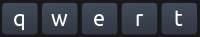
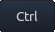
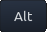
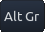
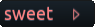

Quick overview
These are the default behaviours of Onboard's keys. Note, that many of them can be modified in Preferences.
Character keys

Press to insert the shown character
Long-press to open a selection of related characters.
Right click to insert the character in upper case.
Long-press popups are not only available for many letters, but also for digits, currency symbols and others.
Modifier keys
  
Keys SHIFT, CTRL, ALT, Alt-Gr:
Press once to activate for the next typed character only
Press a second time to keep it active
Press a third time to deactivate
Press and hold: on a multi-touch enabled device these keys can be held down with one finger while typing characters with another.
Keys CAPS, NumLock:
Press to toggle.
Note: NumLock will be remembered across restarts of Onboard.
Word Suggestions
Word Suggestions can be enabled on preferences page "Typing Assistance".
Spelling suggestions like  are displayed whenever Onboard detects a potentially misspelled word at or before the caret.
Press the suggestion to replace the misspelled word
Press the arrow to show more spelling suggestions
Word completions and predictions:
Press any of suggestions to insert the word at the caret
Long-press any to show a popup menu for that suggestions
The popup menu currently allows to remove erroneous suggestions.